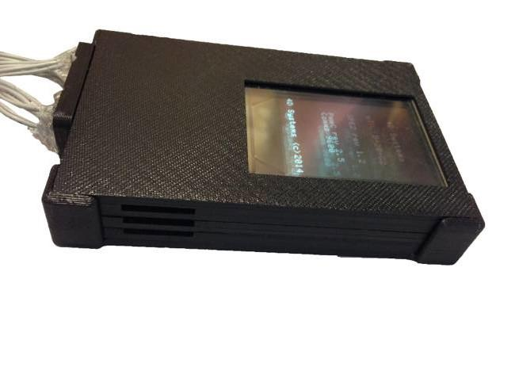
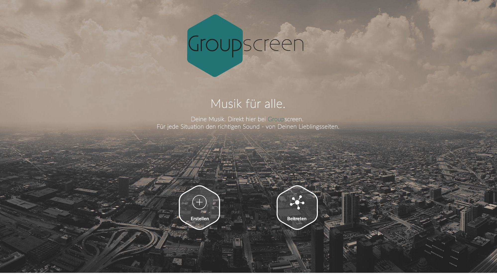

About Me
My name is Florian Weber and I am studying in my eighth semester "Mobile Medien" at the HdM.
Developed a interactive, computer animated application for autostereoscopic and multilayer 3D displays. The idea was to compare the LG P920 Optimus 3D, with a self developed approach to 3D. Therefore we build a device, which had three OLED displays put behind each other, each connected to his own SDCard. Then I opened a serial port to transfer data to each of the displays, creating the illusion of a 3D room. The application was a great success but could not compare on a practical level with the LGSmartphone. The application is developed in Java.
During my studies I took part in an project called “Gravity³”, where more then 50 bachelor and master students from different study fields came together to develop an Oculus Rift game. Besides developing the game, the main idea was that the students have to organize everything. We created teams for music, graphics, management, advertising, coding, game design and QA tester. A small preview can be seen here: https://www.youtube.com/watch? v=Hc1L6sJ5HKI. We used the CryEngine and I was developing the core mechanics like movement and gravity change in c++.
GroupSceen is a Website / App and allows the user to create a themed based virtual room where other users can join in. These themes can be music, documents or videos. Once created the room on your host PC, you can access this room from every device. For example inside of the music room, the creator and owner of the room creates a play-list, which can be filled from different integrated APIs like Spotify, Soundcloud or Youtube. This play-list can then be edited per phone or browser. The application is developed in AngularJS, Ionic, Firebase, Node.JS and Socket.IO.
Gained insight into the Mobile Enterprise software company M-Way Solutions through an internship. Fields of work included, among others: Analysis and development of methods for the automated testing of the software (Development of integration test with Pax-Exam OSGI and Unit tests with J-Unit as well as Karma, Jasmine and PhantomJS for angular/bootstrap).Migration of SVN to GIT and developing of a geolocation conversion tool.

